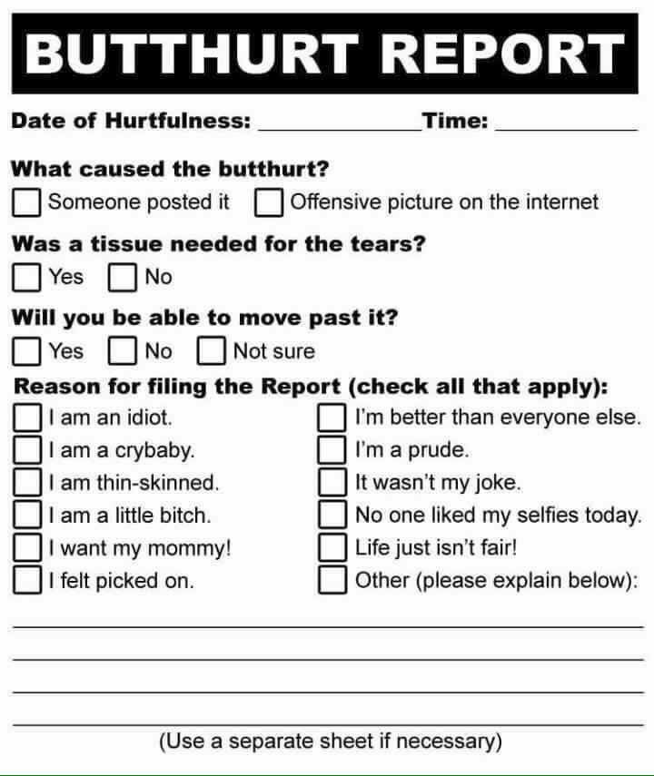

Conversation with newb central at Fri 28 Apr 2017 22:47:33 AEST on +61410193313 (telegram)
(22:47:33) List of 4 users:
[ Eddie Y ][ Monica Lolham ][ rlolham ][ Shant ]
(28/04/17 12:33:03) Eddie Y: try switching the laptop's firewall off for a second.
(28/04/17 12:33:27) Eddie Y: if it works, just add phone's IP to the firewall's outbound :D
(28/04/17 12:35:05) rlolham: cant
(28/04/17 12:35:07) rlolham: work laptop
(28/04/17 12:35:09) rlolham: on work network
(28/04/17 12:37:12) Eddie Y: how o.O you don't have access to windows firewall on your laptop while it's connected to work network ?
(28/04/17 12:37:29) rlolham: locked down
(28/04/17 12:37:42) Eddie Y: wow :O
(22:47:46) Shant: standard :(
(13:11:19) Eddie Y:
stallman braveheart
(13:12:42) Eddie Y: oh man, nvidia drivers phoning home now
(13:12:55) Eddie Y: http://www.majorgeeks.com/news/story/nvidia_adds_telemetry_to_latest_drivers_heres_how_to_disable_it.html
(13:26:33) Shant: ouch
(19:08:34) Eddie Y:

the internet complaint form
(19:08:38) Eddie Y: found it on github of all places lol.
(19:08:51) Eddie Y: apparently sjw storm is hitting github hard now.
(12:45:19) Eddie Y: http://10100110110100001100001011000100110000101101011.com/
(12:45:40) Eddie Y: israeli hacking/programming challenge